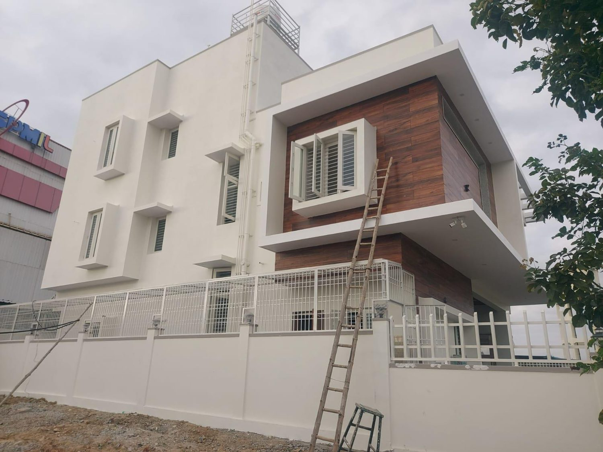

Institutional
Ongoing
Institutional
Ongoing
School Campus, Kengeri
Size2 acres · G+6 · grounds & amphitheatre
Value₹20 Cr
LocationKengeri, Bengaluru
A solution for construction · Bengaluru
Kutadri Contech is a structural-engineer-led firm building across every sector Bengaluru needs — homes, offices, factories, campuses and water infrastructure — and standing behind every handover.

What we build

Independent homes and multi-floor residences from G+1 to G+5, 3,000–7,500 sft.

Office and retail buildings up to 17,000 sft, G+3.

Factory sheds, mezzanines, crane bays and full renovations.
Schools and campuses — including a G+6 school across 2 acres.

STPs, circular clarifiers, high-rise tanks, platforms and roads.
Why Kutadri
Founded and run by Arun Kumar K V, a postgraduate structural engineer with 15+ years alongside leading contractors and developers. The promise is simple and we keep it on record: quality, reliability and transparency.
That's deliberate. Fewer sites means the engineer's full attention on every one — careful planning, tight supervision and finishing that lives up to the drawing. It's how we hold the best quality in the industry, project after project, instead of spreading thin across dozens.
Selected work
Institutional
Ongoing
 Commercial
Completed
Infrastructure
Completed
Commercial
Completed
Infrastructure
Completed
What we do
From the first drawing to the final coat of paint — handled in-house, so nothing falls through the gaps between consultants.
Feasibility, site study and project planning — scope, budget and timeline agreed before anything begins.
Drawings and statutory sanctions handled end to end, so your project is cleared and compliant with the authorities.
Safe, efficient structural design by a postgraduate structural engineer — sound on paper before it's built on site.
Finishing and interiors by the same team, so you get a complete, move-in-ready handover — not a bare shell.
Tell us about the site and what you want to build. We'll come back with a clear, honest read on how to get it done.